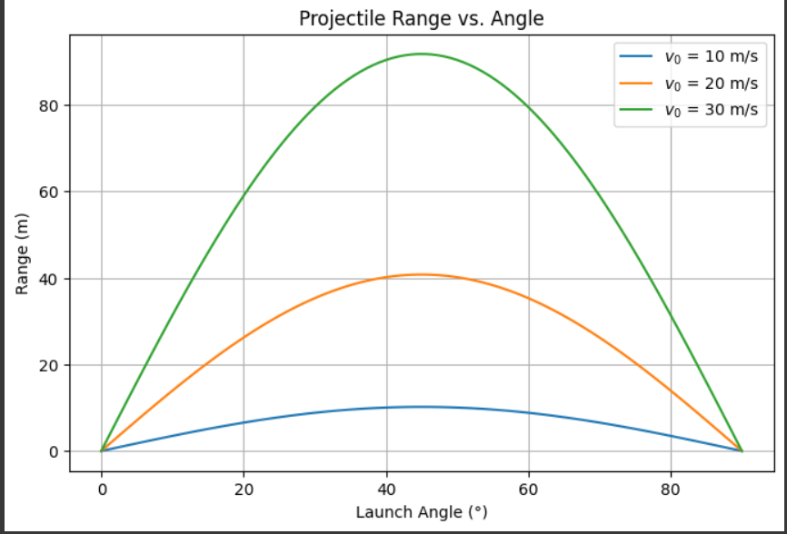

Problem 1
Projectile Motion Simulation
1. Introduction
Purpose of the Study
In this report we will be studying the motion of a projectile. The goal of this study is to develop a clear mathematical model that describes how different factors, like the angle of launch and initial velocity,affect the range and trajectory of the projectile.
2. Theoretical Foundation
2.1 Governing Equations of Motion
There are basic equations that govern the motion of a projectile. These equations describe the horizontal and vertical displacements over time, considering an initial velocity and launch angle.
Derivation of Governing Equations of Motion
1. Horizontal Motion
In projectile motion, the horizontal velocity remains constant (neglecting air resistance). The horizontal displacement is given by:
where: - \(v_0\) is the initial velocity, - \(\theta\) is the launch angle, - \(t\) is time.
2. Vertical Motion
The vertical motion is influenced by gravity, leading to the following equation:
where: - \(g\) is the acceleration due to gravity.
The velocity in the vertical direction changes over time:
The time of flight, range, and maximum height can be derived from these equations.
3. Family of Solutions
The trajectory of a projectile depends on two initial conditions: the initial velocity \(v_0\) and the launch angle \(\theta\). These parameters lead to a family of solutions, meaning the trajectory varies based on different values of \(v_0\) and \(\theta\).
Key Observations
- Varying \(v_0\) changes speed and range.
- Varying \(\theta\) affects trajectory shape, with the optimal angle for maximum range being \(45^\circ\).
By adjusting \(v_0\) and \(\theta\), we can control the projectile's motion, optimizing for distance, height, or speed depending on the scenario.
Practical applications
- It is important in sports such as basketball , discus and javelin to optimize angles for maximum range
- useful in aerospace and engineering
Calculating Projectile Range at Different Angles
Range Formula
Example 1
Example 2
- For the same velocity, increasing the angle affects range differently.
- The maximum range occurs at 45
- Higher velocity results in a longer range.
Projectile Range vs. Angle
Description
The graph illustrates the relationship between the launch angle and the projectile range (m) for different initial velocities. The three curves represent:

Blue Curve:
v = 10 m/s
Orange Curve:
v = 20 m/s
Green Curve:
v = 30 m/s
Observations:
- The range increasess with angle up to 45°, after which it decreases symmetrically.
- Higher initial velocity results in a greater range.
- The maximum range occurs at 45° for all velocities.
Key Equation:
The projectile range R (ignoring air resistance) is given by:
where:
- R = range
- v = velocity
- g = 9.81 m/s² is the acceleration due to gravity.
Limitations:
- No Air Resistance Considered – The graph assumes ideal projectile motion in a vacuum.
- No Wind Effects – External forces like wind resistance are ignored.
- No Spin or Magnus Effect – Rotational forces affecting range are not considered.
- Constant Acceleration Due to Gravity – Assumes a uniform gravitational field (\( g = 9.81 \) m/s²).
Range changing at different angles
Range changing at different velocities